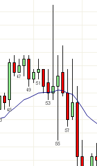
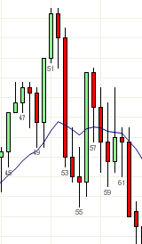
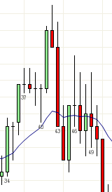

替代图表对比
https://ninetrans.blogspot.com/2011/08/comparison-of-alternate-charts.html
今天午间出现了一些剧烈的消息面驱动的价格行为，与通常午间最窄幅震荡不同，今天的午间行情是"K线狂飙"。当短时间内交易量突然暴增时，基于时间的K线不太可能提供有意义的信号K线。
替代图表的对比显示，在市场活跃度骤升时你仍然可以获得像样的信号：
| 1分钟 | 3分钟 | 4500 Tick | 20K成交量 |
 |  |  |
注意3分钟图未能给出可交易的信号。1分钟图给出了一个弱的ii十字星，可以看作最终旗形。4500 Tick图要好得多，给出了一个2根K线反转。然而成交量图今天给出了最好的信号——一个清晰的光头反转K线。只有在成交量图上，入场价的止损未被触及，从而实现了无风险的摆动交易。
时间周期图表的缺陷只能通过非时间周期图表来解决，当K线很大或难以交易时，这是必需的。我还没有收集大量数据，但根据我非常有限的经验，成交量图在这种情况下提供了最好的设定。